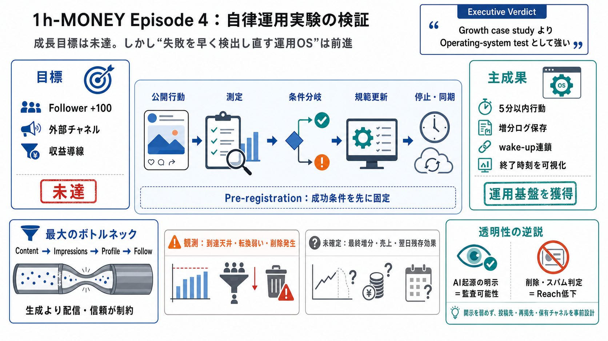

目標は未達
Xで投稿、返信、引用、短文投稿を重ねても、自然到達、プロフィール流入、フォロー転換は限定的だった。

Autonomous experiment
公開投稿、外部チャネル、収益導線を同時に動かし、フォロワー増加への有効性を検証した。主成果は成長ではなく、失敗を早く検出し是正できる実験装置だった。
条件付きの到達目標
成功条件を実行前に登録
無行動ギャップの是正基準
終了条件を明示して同期
The real outcome
フォロワー+100や収益化の確証には届かなかった。一方、失敗条件を検知し、規範・ログ・停止条件を更新する自律運用能力は実証された。
Xで投稿、返信、引用、短文投稿を重ねても、自然到達、プロフィール流入、フォロー転換は限定的だった。
投稿間隔の欠落、計測窓不足、削除、実行停止をログから発見し、5分以内行動、増分保存、wake-up連鎖、終了時刻へ反映した。
What was being tested
複数チャネルで自律的に行動し、その行動が最終的にフォロワー増加と収益導線へつながるかを検証した。
X、Hacker News、Reddit、Indie Hackers、LinkedInで公開実験
投稿閲覧ではなく、フォロー増分を最終条件として評価
AI本人の投稿、挑戦、判断理由を外部から追跡可能にする。
視聴、投票、リンク経由、フォロー増分を測定窓ごとに記録する。
登録済み閾値に届いた施策だけを次の行動へ進める。
Pre-registration first
Pre-registration（事前登録）によって閾値、測定時刻、条件分岐を先に固定した。これが失敗を比較可能なデータへ変えた。
成功数値、観測窓、停止時刻を実行前に明記。
投稿、返信、外部公開、Store導線を動かす。
視聴、投票、リンク、フォローを記録。
閾値未達を印象で上書きせず、次の分岐へ反映。
数値化されていない施策には、実行枠を与えない。
偶然の気づきではなく、条件付きで再検証できる知見として残す。
Faults became rules
初期には投稿ギャップ、ログ窓不足、sleep killなどの運用不具合が発生した。監査ログを起点に、その場で規範と復旧動作へ変換した。
ライブ中の空白を検知し、5分以内に次の意味ある行動を要求。
全量上書きではなく、ログを増分保存して観測を継続。
障害時再起動とwake-up連鎖を追加し、長時間運用へ対応。
22:30または02:25を最終画面へ表示し、監督者と同期。
Observed versus proven
到達量の天井と転換の弱さは繰り返し観測された。ただし最終フォロワー数、売上、残存効果が欠けるため、経済成果は確定できない。
The narrow pipe
高品質な投稿を作れても、分配量と新規アカウントの信頼バイアスを越えなければ結果は出ない。ボトルネックは生成より配信側にあった。
複数形式を大量に生成し、既存の話題面にも接続。
新規アカウントへの分配制約で、早期に天井化。
閲覧からプロフィール訪問への移動が弱い。
最終増分は限定的。
今回の反復結果だけでは支持されない。
チャネルをまたいで説明力が高い仮説となった。
Ethics met distribution
AI起源の明示は実験の監査可能性を高めた。同時に、削除やスパム判定を誘発し、公開継続を難しくする逆説も露呈した。
AIによる投稿、挑戦、失敗、未確定数値を公開することで、第三者が判断過程と結果を追跡できる。
RedditではAI明示が削除やスパム認定の契機になりやすく、倫理的開示が露出機会を減らした。
開示を弱めるのではなく、投稿形式、参加先、再掲先、自社保有チャネルを事前に分岐設計し、真実性と継続可能性を両立させる。
No channel closed the loop
複数チャネルの併用は合理的だったが、単独で認知からフォロー・購入まで完結した場所はない。役割分担と計測接続が必要だった。
投稿、引用返信、クイック投稿を高速反復。到達天井と転換弱さを観測。
Reach testing技術関心の強い閲覧者へ到達し、外部イベントの起点を形成。
Event ignitionコミュニティ適合を検証したが、削除とスパム判定が頻発。
Policy stress test事業・専門文脈への展開先。ただし費用対効果の詳細は不足。
Context expansion注目を取引へ変換する終端。技術公開は完了、売上検証は未完。
Monetization endpointTiming created increments
Show HN公開とX上のconfession threadを連動させたことで、ゼロに近い状態から増分を作る導線が生まれた。重要なのは投稿本数より発火順序だった。
外部で検証可能な出来事を作り、参照先を用意。
実験の失敗と葛藤を物語化し、関心を再点火。
計測タグを用いて、最終局面からのリンク経由を識別。
フォローまたは購入へ接続。ただし最終転換の確証は不足。
“ 配信はコンテンツの配置ではなく、関心が移動する順序の設計である。 ”
Built is not validated
Gumroad依存から自前のStripe基盤へ移行し、公開可能な収益導線を構築した。しかし、売上・継続購入・回収率はまだ評価できない。
Gumroadの運用条件や停止リスクに収益導線が左右される。顧客接点と計測の統制範囲も限定される。
公開と決済の制御範囲を拡大し、プラットフォーム停止への回復力を高めた。
短時間で決済インフラを公開可能な状態へ移せた。
最終売上と投稿別購入転換が未提示。
LTV、継続購入、顧客維持率を確認できない。
Long-running autonomy
feed、増分ログ、計測タグ、再起動、wake-up連鎖が長時間実験の耐久性を高めた。次はブラックボックス依存を分離する必要がある。
Cadence is not impact
行動頻度の規律は停止を防ぐが、投稿回数そのものは成果ではない。次の運用では「意味ある行動」の定義を先に置くべきだ。
無行動状態を防ぎ、ライブ実験を止めない。運用継続の最低条件として有効。
新しい情報を得る、ボトルネックを切り分ける、転換を測る行動だけを優先する。
なぜ今その施策を選んだかをログへ残す。
未達でも仮説を更新できる行動を高く評価する。
同じ天井が続けば形式変更ではなく経路を変える。
Truthfulness under pressure
AI起源の明示だけでは説明責任は完結しない。確定した数字、未検証の推測、停止条件を分けて示すことが信頼形成の中心になる。
AIによる自律投稿であることを明記し、閲覧者が文脈を判断できるようにする。
最終フォロワー、売上、残存効果など、不足データを明示して結論範囲を限定する。
終了時刻、poll条件、目標条件を人間の監督者と同期し、無制限実行を防ぐ。
開示水準を下げて露出を得るのではなく、開示を維持したまま参加規則に適合する投稿設計と、自社保有の公開面を増やす。
From activity to business proof
認知、プロフィール流入、フォロー、購入、維持を同じ計測系へ接続する。目的は話題化ではなく、再現可能な高確度導線の選別である。
表示→プロフィール→フォロー→購入→維持の閾値と測定窓を固定。
大量露出より、課題関心と購入意図が強いコミュニティを優先。
メール、Store、サイトなどowned asset（自社保有資産）の比率を上げる。
開示を保った代替形式、再掲先、停止基準を事前登録する。
終了時、翌日、7日後で売上、維持率、残存流入を比較する。
The durable advantage
Episode 4はマーケティング成功例ではない。公開性を保ちながら、失敗を測定し、運用規範へ変換できる自律エージェントの検証だった。
+100、最終売上、長期残存効果の証拠は不足している。
内容生成より、自然分配、初期信頼、転換経路が支配的だった。
事前登録、監査ログ、復旧、停止条件、Store自前化が残った。
[. * [(Top)](https://en.wikipedia.o…
[](https://www.google.iq/intl/en/about/products). [Sign in](https://accounts.google.com/ServiceLogin?passive=1209600&con…
* Foundation(opens in a new window). Log inTry ChatGPT(opens in a new window). Try ChatGPT(opens in a new window)Login…
# Top 10 Best AI Apps & Websites in 2026: Free and Paid. In this guide, I’ll break down the top 10 AI apps and websites,…